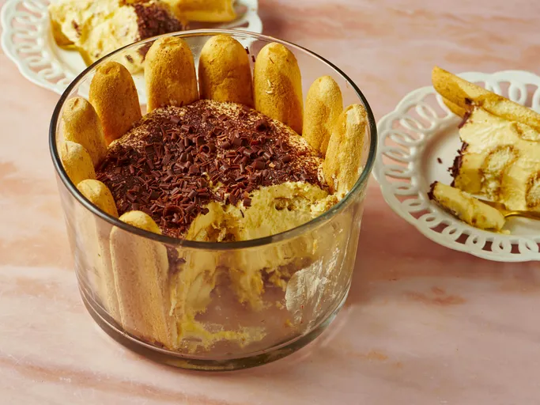

Tiramisu
home

Description :
Tiramisu (Italian for "pick me up") is a rich, no-bake Italian layered dessert made from coffee-soaked ladyfinger biscuits (savoiardi) layered with a velvety, whipped mixture of mascarpone cheese, eggs, and sugar, finished with a dusting of unsweetened cocoa powder.
Ingredients :
-
Biscuits: 24–30 savoiardi (crisp Italian ladyfingers).
-
Coffee Soak: 300 ml freshly brewed espresso or strong coffee (cooled completely to room temperature) and 2–3 tbsp Marsala wine, dark rum, or coffee liqueur (optional).
-
Mascarpone Cream: 500 g cold mascarpone cheese, 4 large fresh egg yolks, 100 g granulated sugar, and 240 ml cold heavy whipping cream (or whipped egg whites for a lighter, traditional texture).
-
Topping: 2–3 tbsp unsweetened Dutch-processed cocoa powder.
-
Equipment: Mixing bowls, electric hand mixer or stand mixer, fine-mesh sieve, shallow dipping dish, and an 8×8-inch (20×20 cm) square dish.
How to make a Tiramisu :
- Brew and cool the coffee:Must be room temperature before dipping.Brew 300 ml of strong espresso or coffee into a shallow bowl, stir in optional Marsala wine or liqueur, and set aside to cool completely so it does not melt the cream later.
- Whip the egg yolks and mascarpone:Beat egg yolks and sugar with a mixer for 3–4 minutes until pale, thick, and doubled in volume. Add the cold mascarpone and mix on low speed just until smooth—do not overbeat, or the mascarpone can curdle.
- Fold in whipped cream:In a separate bowl, whip cold heavy cream to stiff peaks. Gently fold it into the mascarpone mixture in two additions with a spatula to keep the cream airy.
- Dip ladyfingers and layer:1-second dip per side — do not soak.Quickly dip each ladyfinger into the cooled coffee for 1 second per side, then arrange a snug single layer in your dish. Spread half the mascarpone cream over top, add a second layer of dipped ladyfingers, and smooth the remaining cream on top.
- Chill and dust with cocoa:Chill at least 6 hours or overnight.Cover and refrigerate for at least 6 hours so the biscuits soften into a cake-like texture and the cream sets. Dust generously with cocoa powder through a fine sieve right before serving so the cocoa stays dry and dark.